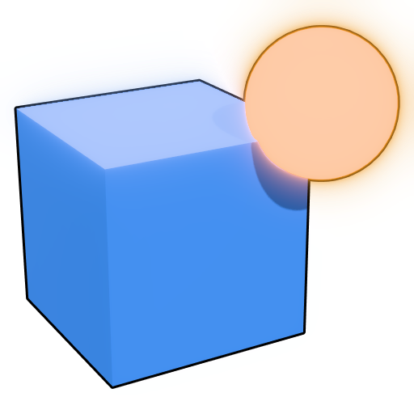

Saves every setting of the current file (camera, lighting, VFX, effects, background). Using an existing name overwrites it.
Meshes and textures referenced by your files (rbxassetid://…) are downloaded from Roblox, which requires authentication. Use either:
rbxassetid://…
legacy-asset:manage
The cookie grants full access to your Roblox account. It is stored encrypted on this computer and only sent to roblox.com. Prefer the API key, ideally from an alt/group account.
Quality and shape come from the toolbar (sprite sheets keep square frames). GIFs are limited to 256 colors, 1-bit transparency and 1024 px; APNG and animated WebP keep full color and smooth transparency. MP4 has no transparency; transparent WebM keeps it (Chrome, editors that read VP9 alpha). Camera keys on the timeline are followed.
Tokens: {name} {size} {w} {h} {format} {profile} {preset} {index} {date}. Used for image and animation exports; extra sizes add _{size} when the template has none.
{name}
{size}
{w}
{h}
{format}
{profile}
{preset}
{index}
{date}
_{size}
Builds the avatar with body colors, shirt, pants, T-shirt, face, head, accessories and body package meshes. R15 also takes dynamic heads and needs Roblox Studio or the player installed (for the default rig). Layered clothing and body scaling aren't reproduced. Asset files download with your Roblox access settings.
Models, accessories, gear and meshes download with your Roblox access settings. Several IDs (separated by commas or spaces) become separate files.